Gamme de tapis lavables pour animaux
16 modèles prêts pour chiens, chats et petits animaux, chacun avec sa référence, sa taille et sa composition complète. Chaque modèle s'adapte à votre marque.
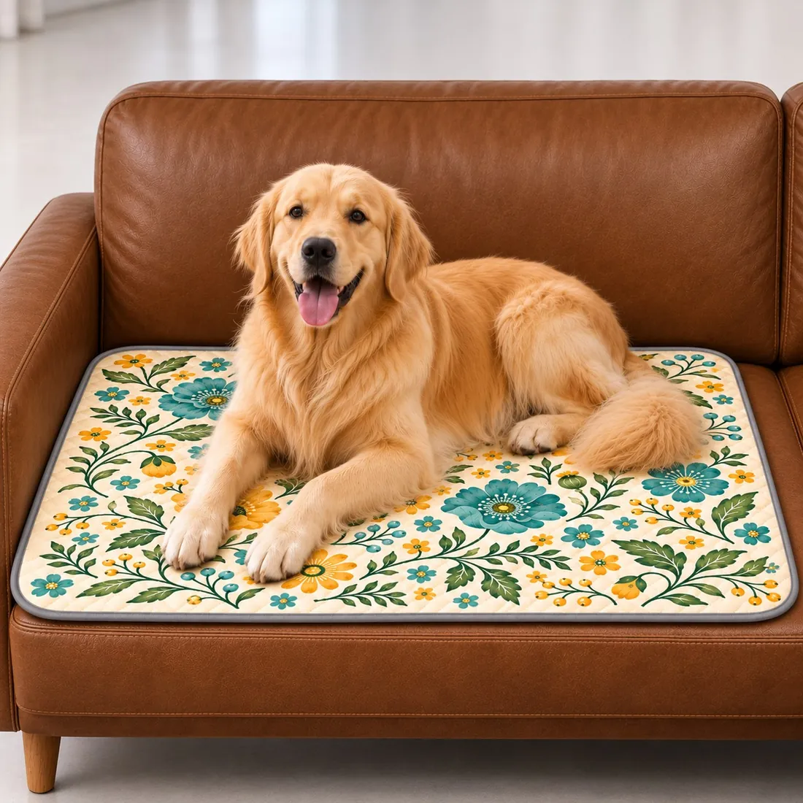
10616 modèles en un coup d'œil
Cliquez sur un modèle pour voir ses photos et sa fiche technique.
 107
107 108
108 109
109 110
110 111
111 112
112 113
113 114
114 115
115 116
116 117
117 118
118 119
119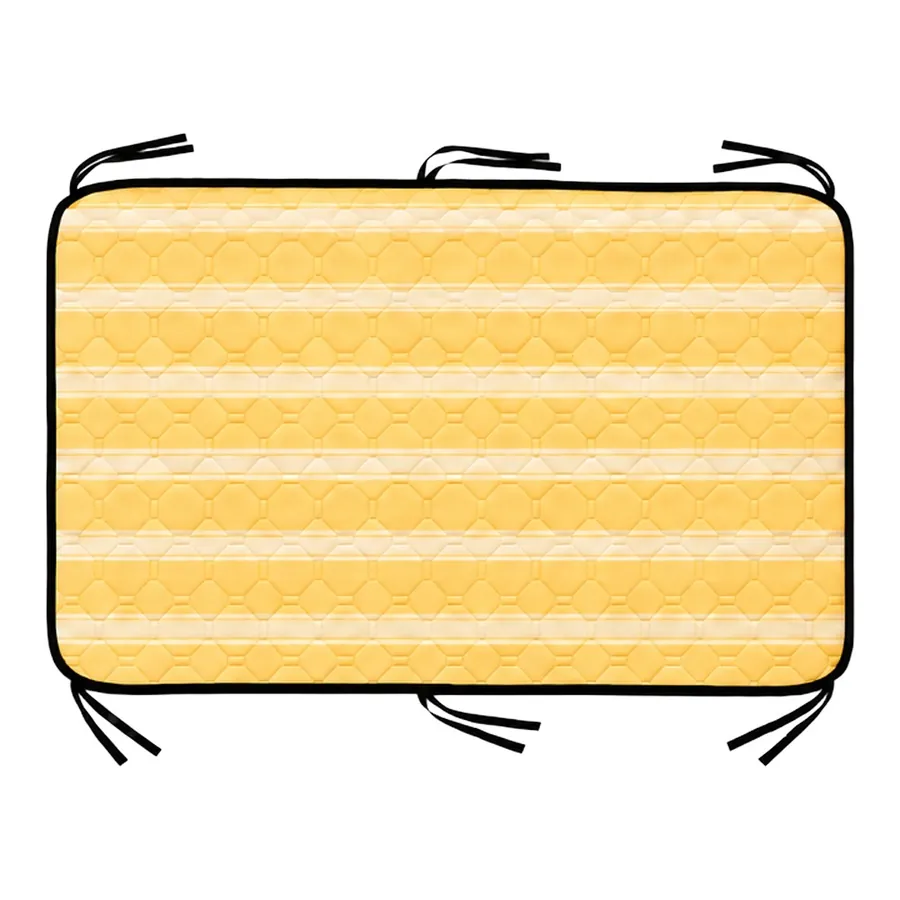
120 121
121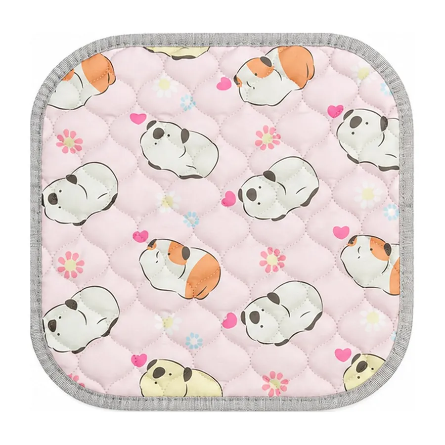
122Tapis pour sols, caisses, canapés et lits
14 modèles, 16 références.
107 123
123 124
124 125
125 126
126Empreintes de pattes, gris clair
Un tapis carré au dessus gris clair à empreintes de pattes, gaufrage octogonal et biais en ruban de tissu. L'envers noir porte des points de silicone pour rester en place sur carrelage et parquet.
| Taille | 23 × 23 in (58 × 58 cm) |
|---|---|
| Motif | Gris clair avec chiens, chats et empreintes |
| Dessus | Polyester, absorbant |
| Matelassage | Grille octogonale, gaufrage ultrasonique |
| Bordure | Biais en ruban de tissu |
| Envers | Polyester avec points antidérapants en silicone (points de 2 mm, espacés de 1 cm) |
| Couches | 4 · film imperméable TPU |
| Usage | Apprentissage de la propreté, caisses, sols |
108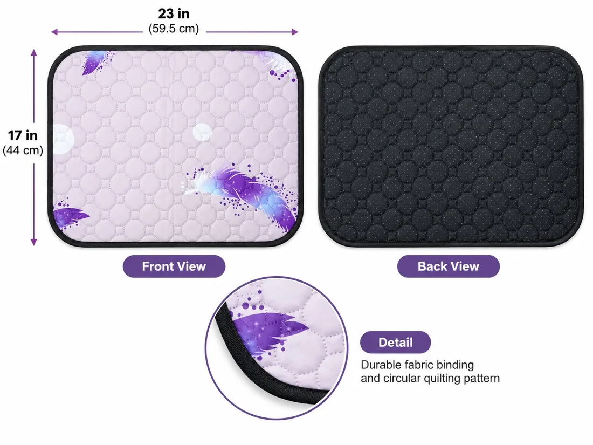
127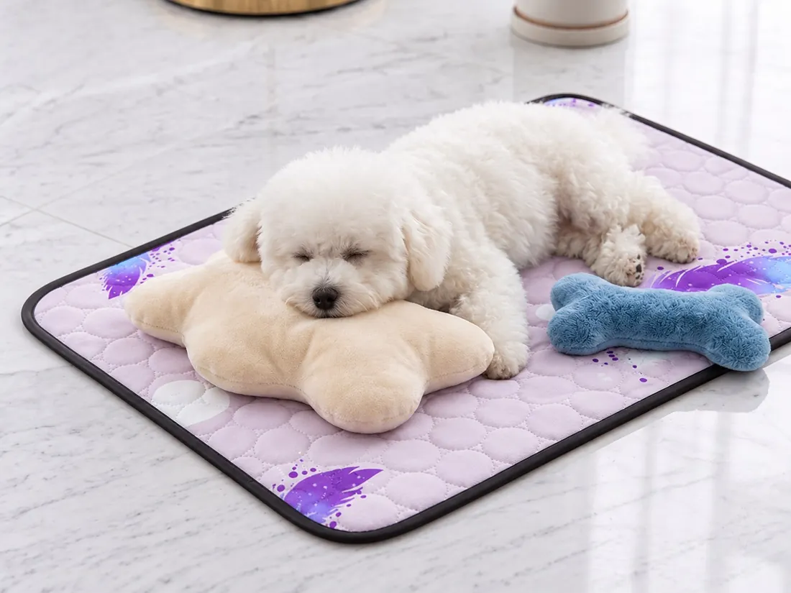
128 129
129 130
130Motif plumes, lilas
Un tapis compact au motif de plumes lilas, matelassé en cercles. Assez petit pour les sacs de transport, les caisses et les voyages, avec envers antidérapant à points.
| Taille | 17 × 23 in (44 × 59 cm) |
|---|---|
| Motif | Lilas avec plumes violettes |
| Dessus | Polyester, absorbant |
| Matelassage | Matelassage en cercles |
| Bordure | Biais en ruban de tissu |
| Envers | Polyester avec points antidérapants en silicone (points de 2 mm, espacés de 1 cm) |
| Couches | 4 · film imperméable TPU |
| Usage | Sacs de transport, caisses, voyages |
109 131
131 132
132 133
133 134
134Rayures rouges, bord festonné
Rayures rouges et blanches, gaufrage losange et bord festonné bordé de ruban tissé. Un tapis décoratif qui garde la structure complète 4 couches avec film TPU.
| Taille | 22 × 33 in (55 × 84 cm) |
|---|---|
| Motif | Rayures rouges et blanches, bord festonné |
| Dessus | Polyester, absorbant |
| Matelassage | Motif losange, gaufrage ultrasonique |
| Bordure | Biais en ruban tissé |
| Envers | Polyester avec points antidérapants en silicone (points de 2 mm, espacés de 1 cm) |
| Couches | 4 · film imperméable TPU |
| Usage | Décoration, apprentissage de la propreté, sols |
110 135
135 136
136 137
137 138
138Menthe, rond, bord festonné
Un tapis rond menthe, piqué en canaux, au bord festonné. Sur le dessus déperlant, le liquide perle et s'essuie ; le film TPU arrête ce qui traverse.
| Taille | Ø 35 in (Ø 90 cm) |
|---|---|
| Motif | Menthe, rond à bord festonné |
| Dessus | Polyester, déperlant |
| Matelassage | Piqûres en canaux verticaux |
| Bordure | Biais en ruban tissé |
| Envers | Polyester avec points antidérapants en silicone (points de 2 mm, espacés de 1 cm) |
| Couches | 4 · film imperméable TPU |
| Usage | Décoration, apprentissage de la propreté, sols |
111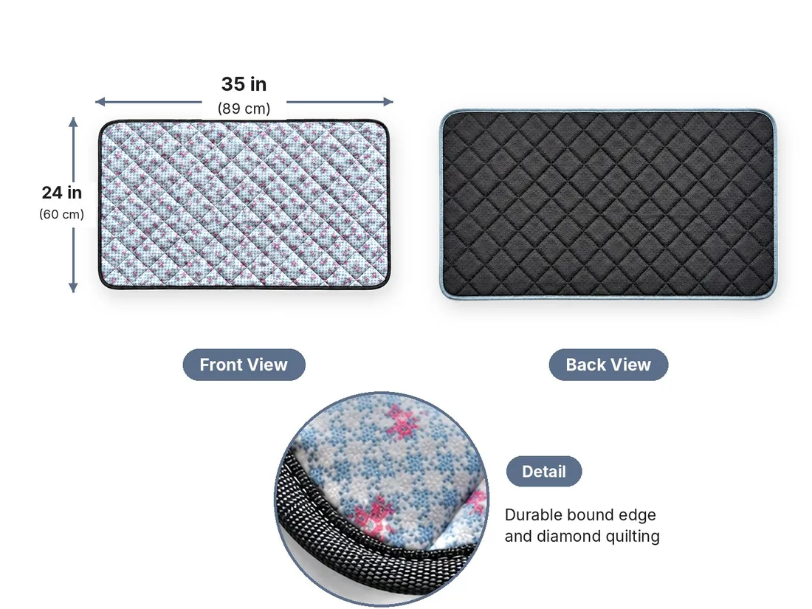
139 140
140 141
141 142
142Motif écossais
Un tapis écossais au matelassage losange, bordé de ruban tissé. Le dessus déperlant convient aux canapés et aux sols où les liquides doivent s'essuyer.
| Taille | 24 × 35 in (60 × 89 cm) |
|---|---|
| Motif | Motif écossais |
| Dessus | Polyester, déperlant |
| Matelassage | Matelassage losange |
| Bordure | Biais en ruban tissé |
| Envers | Polyester avec points antidérapants en silicone (points de 2 mm, espacés de 1 cm) |
| Couches | 4 · film imperméable TPU |
| Usage | Caisses, sols, décoration |
112 143
143 144
144 145
145 146
146Chevron vert
Un dessus chevron vert imprimé en numérique, gaufrage losange et bord en ruban tissé. Deux tailles ; envers gris à points de silicone.
| Taille | 512006: 28 × 20 in (71 × 51 cm) 512007: 24 × 16 in (61 × 40.6 cm) |
|---|---|
| Motif | Chevron vert et blanc, impression numérique |
| Dessus | Polyester, absorbant |
| Matelassage | Motif losange, gaufrage ultrasonique |
| Bordure | Biais en ruban tissé |
| Envers | Polyester avec points antidérapants en silicone (points de 2 mm, espacés de 1 cm) |
| Couches | 4 · film imperméable TPU |
| Usage | Sols, caisses, canapés |
113 147
147 148
148 149
149 150
150Pied-de-poule bordeaux
Pied-de-poule bordeaux imprimé en numérique, gaufrage losange et bord en ruban tissé. Sur le dessus déperlant, le liquide perle et s'essuie. Deux tailles.
| Taille | 512008: 28 × 20 in (71 × 51 cm) 512009: 24 × 16 in (61 × 40.6 cm) |
|---|---|
| Motif | Pied-de-poule bordeaux et blanc, impression numérique |
| Dessus | Polyester, déperlant |
| Matelassage | Motif losange, gaufrage ultrasonique |
| Bordure | Biais en ruban tissé |
| Envers | Polyester avec points antidérapants en silicone (points de 2 mm, espacés de 1 cm) |
| Couches | 4 · film imperméable TPU |
| Usage | Sols, caisses, canapés |
114 151
151 152
152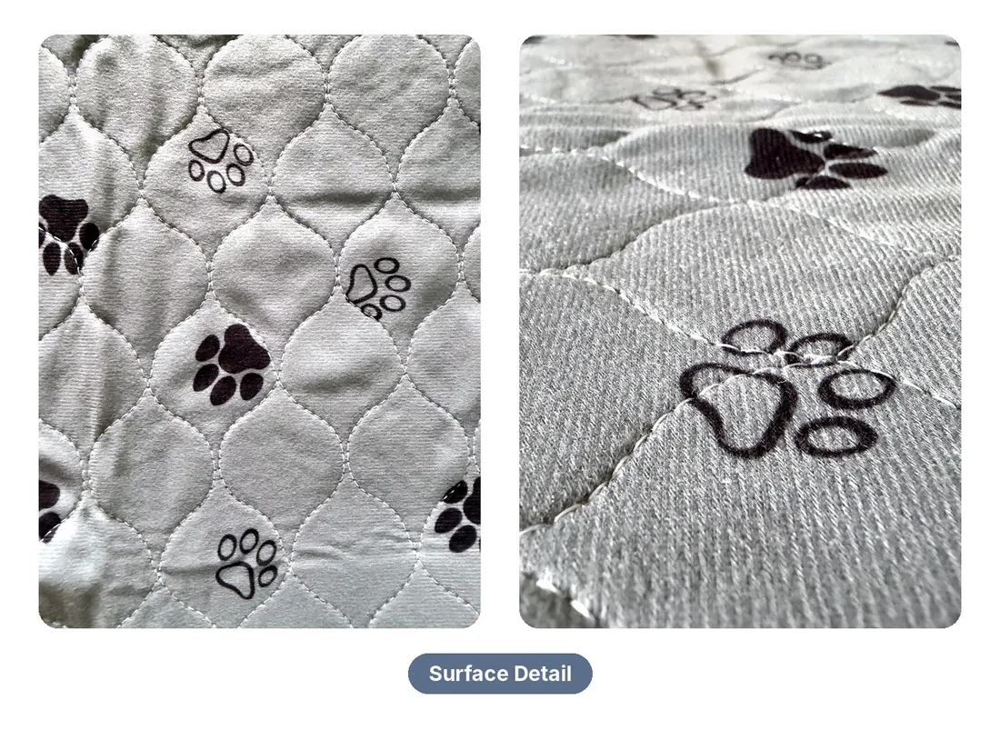
153 154
154Empreintes de pattes, gris
Un tapis gris à empreintes de pattes, matelassage losange ondulé et bord surjeté. L'envers porte des picots de silicone en forme de pattes pour les sols durs.
| Taille | 36 × 31 in (90 × 80 cm) |
|---|---|
| Motif | Gris avec empreintes foncées |
| Dessus | Polyester, absorbant |
| Matelassage | Matelassage losange ondulé |
| Bordure | Bord surjeté |
| Envers | Polyester avec empreintes antidérapantes en silicone |
| Couches | 4 · film imperméable TPU |
| Usage | Sols, caisses, canapés |
115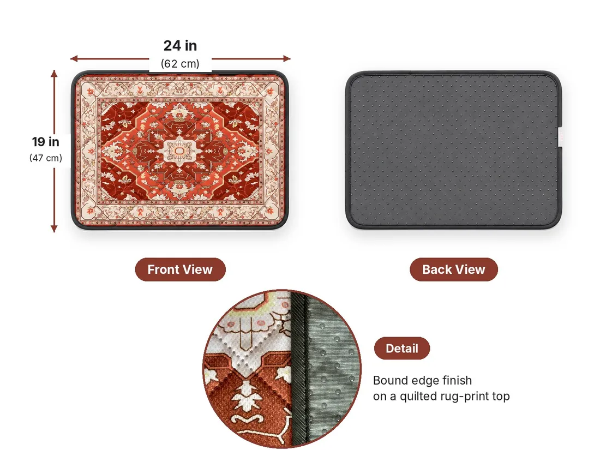
155 156
156 157
157 158
158Motif tapis persan, rouge
Un motif tapis persan rouge et crème qui ressemble à un petit tapis, gaufrage losange et bord bordé. Envers gris antidérapant à points.
| Taille | 24 × 19 in (62 × 47 cm) |
|---|---|
| Motif | Motif tapis persan rouge et crème |
| Dessus | Polyester, absorbant |
| Matelassage | Motif losange, gaufrage ultrasonique |
| Bordure | Bord bordé |
| Envers | Polyester avec points antidérapants en silicone (points de 2 mm, espacés de 1 cm) |
| Couches | 4 · film imperméable TPU |
| Usage | Caisses, lits, sols |
116 159
159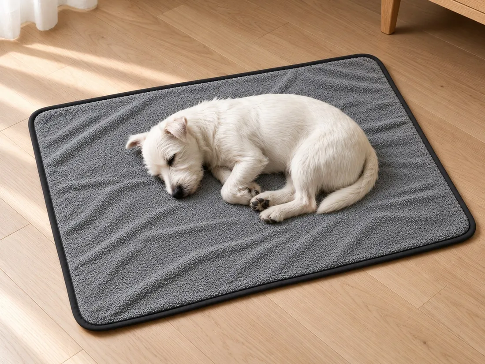
160 161
161 162
162Peluche grise
Un grand tapis au dessus en peluche grise douce, bord bordé, pour les chiens qui aiment s'y coucher comme sur un lit. Envers gris foncé antidérapant à points.
| Taille | 39 × 28 in (100 × 71 cm) |
|---|---|
| Motif | Peluche grise |
| Dessus | Peluche polyester, absorbante |
| Matelassage | Sans matelassage |
| Bordure | Bord bordé |
| Envers | Polyester avec points antidérapants en silicone (points de 2 mm, espacés de 1 cm) |
| Couches | 4 · film imperméable TPU |
| Usage | Caisses, lits, sols |
117 163
163 164
164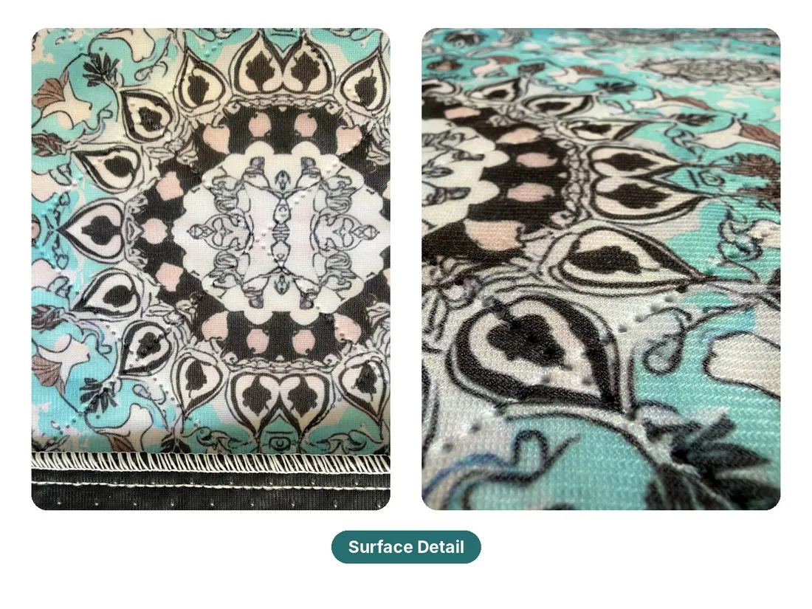
165 166
166Médaillon turquoise
Un motif tapis à médaillon turquoise, gaufrage losange et bord surjeté blanc. Envers foncé antidérapant à points.
| Taille | 24 × 18 in (61 × 46 cm) |
|---|---|
| Motif | Motif tapis à médaillon turquoise |
| Dessus | Polyester, absorbant |
| Matelassage | Motif losange, gaufrage ultrasonique |
| Bordure | Bord surjeté |
| Envers | Polyester avec points antidérapants en silicone (points de 2 mm, espacés de 1 cm) |
| Couches | 4 · film imperméable TPU |
| Usage | Caisses, lits, sols |
118 167
167 168
168 169
169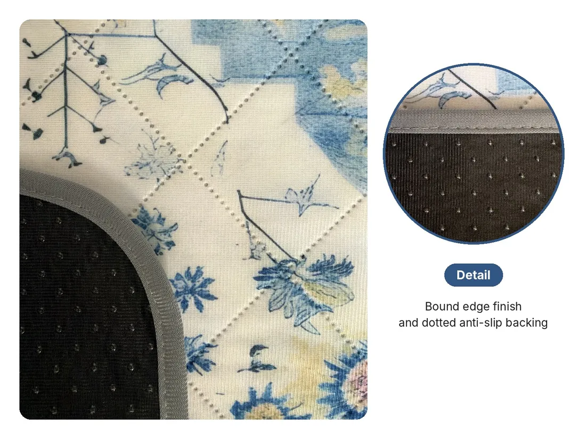
170Tapis vintage bleu
Un motif tapis vintage bleu, crème et jaune doux, gaufrage losange et bord bordé gris. Envers gris foncé antidérapant à points.
| Taille | 36 × 24 in (92.5 × 62.5 cm) |
|---|---|
| Motif | Motif tapis vintage bleu, crème et jaune |
| Dessus | Polyester, absorbant |
| Matelassage | Motif losange, gaufrage ultrasonique |
| Bordure | Bord bordé |
| Envers | Polyester avec points antidérapants en silicone (points de 2 mm, espacés de 1 cm) |
| Couches | 4 · film imperméable TPU |
| Usage | Caisses, lits, sols |
119 171
171Motif floral
Fleurs bleu canard et dorées sur fond crème, matelassage losange et bord bordé gris. Dimensionné pour les canapés et les grands lits.
| Taille | 30 × 40 in (75 × 102 cm) |
|---|---|
| Motif | Fleurs bleu canard et dorées sur fond crème |
| Dessus | Polyester, absorbant |
| Matelassage | Matelassage losange |
| Bordure | Bord bordé |
| Envers | Polyester avec points antidérapants en silicone (points de 2 mm, espacés de 1 cm) |
| Couches | 4 · film imperméable TPU |
| Usage | Canapés, lits, caisses, sols |
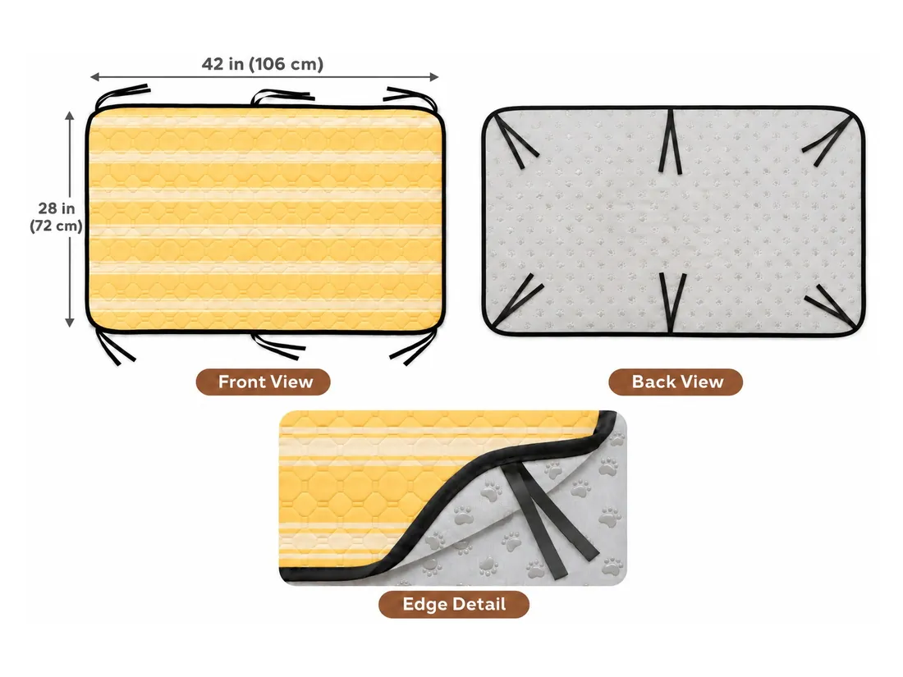
172 173
173 174
174Rayures jaunes avec attaches
Rayures jaunes et crème, matelassage octogonal et bord bordé noir. Six attaches en tissu la fixent à un canapé, un lit, une caisse ou un siège auto ; picots de silicone en forme de pattes sur l'envers.
| Taille | 42 × 28 in (106 × 72 cm) |
|---|---|
| Motif | Rayures jaunes et crème |
| Dessus | Polyester, absorbant |
| Matelassage | Matelassage octogonal |
| Bordure | Bord bordé, noir |
| Envers | Polyester avec empreintes antidérapantes en silicone |
| Attaches | 6 attaches en tissu (4 coins, 2 côtés) |
| Couches | 4 · film imperméable TPU |
| Usage | Canapés, lits, caisses, sièges auto |
Tapis de cage pour hamsters et cochons d'Inde
121 175
175 176
176 177
177Tapis de cage, motif champignons
Une garniture de cage lavable pour hamsters, cochons d'Inde et autres petits animaux : dessus imprimé, âme absorbante et points antidérapants, pour nettoyer la cage en un simple échange.
| Taille | 12 × 12 in (31 × 31 cm) |
|---|---|
| Motif | Vert foncé à motif champignons |
| Dessus | Polyester, absorbant |
| Matelassage | Motif losange, gaufrage ultrasonique |
| Bordure | Biais en ruban de tissu |
| Envers | Polyester avec points antidérapants en silicone (points de 2 mm, espacés de 1 cm) |
| Couches | 4 · film imperméable TPU |
| Usage | Cages de hamsters, cochons d'Inde et petits animaux |
 178
178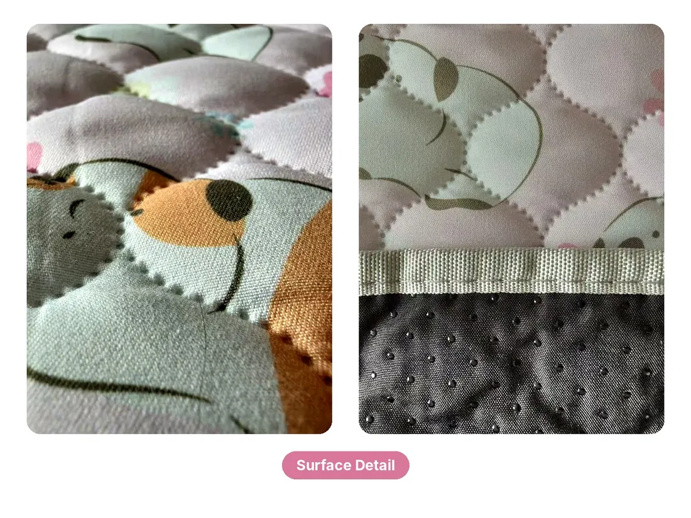
179 180
180Tapis de cage, motif cœurs
Un petit tapis de cage rose clair à motif cœurs, âme absorbante et envers antidérapant à points.
| Taille | 11 × 11 in (29 × 29 cm) |
|---|---|
| Motif | Rose clair à motif cœurs |
| Dessus | Polyester, absorbant |
| Matelassage | Sans matelassage |
| Bordure | Biais en ruban de tissu |
| Envers | Polyester avec points antidérapants en silicone (points de 2 mm, espacés de 1 cm) |
| Couches | 4 · film imperméable TPU |
| Usage | Cages de hamsters, cochons d'Inde et petits animaux |
Ce que contient chaque tapis 512
 181
181Une même structure 4 couches pour chaque modèle
D'un modèle à l'autre, seuls le tissu du dessus, le matelassage, le bord et la taille changent. Les couches dessous restent les mêmes.
| 1 · Dessus | Polyester : absorbant, déperlant ou peluche |
|---|---|
| 2 · Âme absorbante | Non-tissé aiguilleté, polyester/viscose |
| 3 · Couche imperméable | Film TPU |
| 4 · Envers | Polyester avec points ou empreintes antidérapants en silicone |
| Entretien | Lavable en machine et réutilisable |
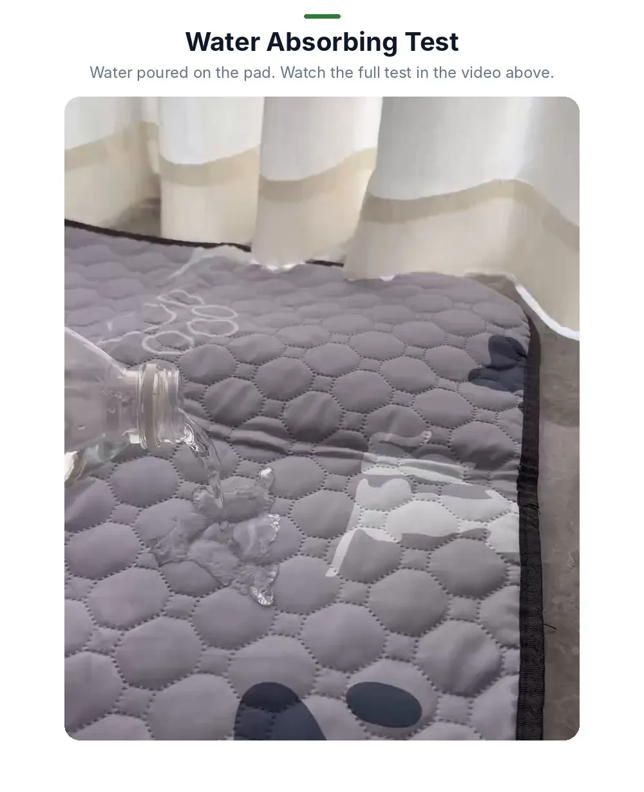
182 183
183Deux types de dessus
Les dessus absorbants font descendre aussitôt le liquide dans l'âme : le choix pour l'apprentissage de la propreté et les caisses. Sur les dessus déperlants, le liquide perle et s'essuie : le choix pour les canapés, les lits et les tapis déco. Dans les deux cas, le film TPU garde le sol ou le meuble au sec.
Votre version de la gamme 512
Partez de n'importe quel modèle, changez ce qu'il faut
Chaque modèle ci-dessus peut être fabriqué à votre taille, grammage, absorption, couleur ou impression, avec un autre bord, matelassage ou motif antidérapant, votre logo et votre emballage.
| Modifiable | Taille, matières, grammage, absorption, couleur, impression, bord, matelassage, motif antidérapant, logo |
|---|---|
| Emballage | Étiquettes d'entretien et cartes couleur personnalisées ; emballage détail ou en vrac |
| Références | Chaque nouvelle combinaison reçoit sa propre référence 512 |
Vous préparez une gamme de tapis pour animaux ?
Envoyez-nous les références qui vous intéressent, vos tailles et quantités. Nous répondons avec prix et délai sous un jour ouvré.